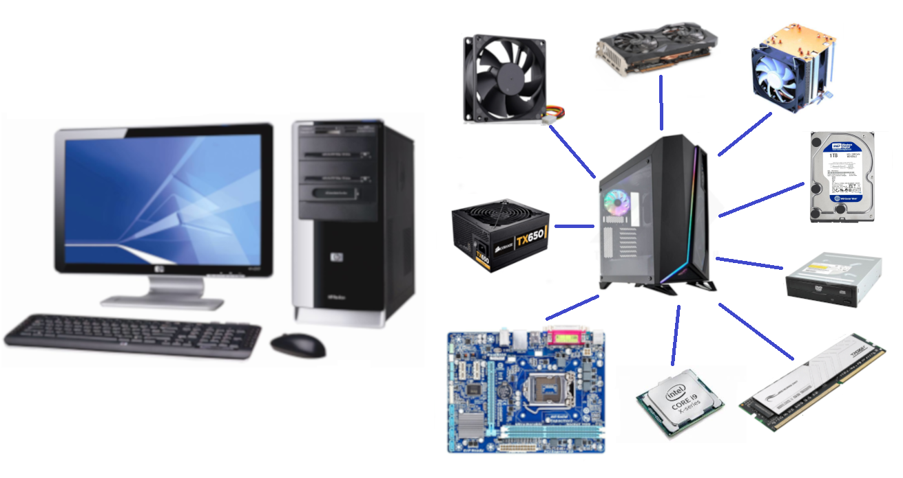

CUỘC THI SÁNG TẠO SẢN PHẨM GIÁO DỤC TRÊN NỀN TẢNG ROBOKI AI
Mô hình máy tính ảo - Dự án STEM
Mô hình máy tính ảo – Dự án STEM

Chào mừng bạn
Khám phá cấu tạo, thiết bị ngoại vi và mạng máy tính.
Giới thiệu dự án STEM
Mô hình máy tính ảo là một sản phẩm học tập ứng dụng công nghệ thông tin được xây dựng nhằm giúp học sinh tìm hiểu về cấu tạo, nguyên lý hoạt động của máy tính để bàn, các thiết bị ngoại vi và các thiết bị mạng một cách trực quan, sinh động. Thông qua mô hình, học sinh có thể quan sát, nghe mô tả và tương tác với từng linh kiện của máy tính như CPU, RAM, Mainboard, ổ cứng, bộ nguồn, quạt tản nhiệt, card đồ họa, vỏ máy, cùng các thiết bị kết nối bên ngoài như màn hình, bàn phím, chuột, loa, máy in, thiết bị mạng và các cổng giao tiếp thông dụng. Sản phẩm được thiết kế dưới dạng một trang web mô phỏng đơn giản, sử dụng hình ảnh thật của các linh kiện để giúp học sinh dễ dàng hình dung và nắm bắt được mối quan hệ giữa các bộ phận trong hệ thống máy tính.